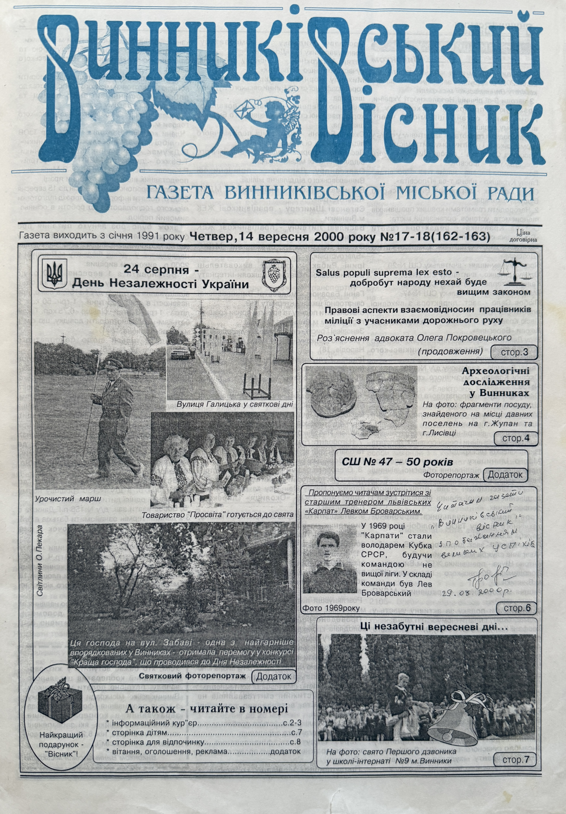
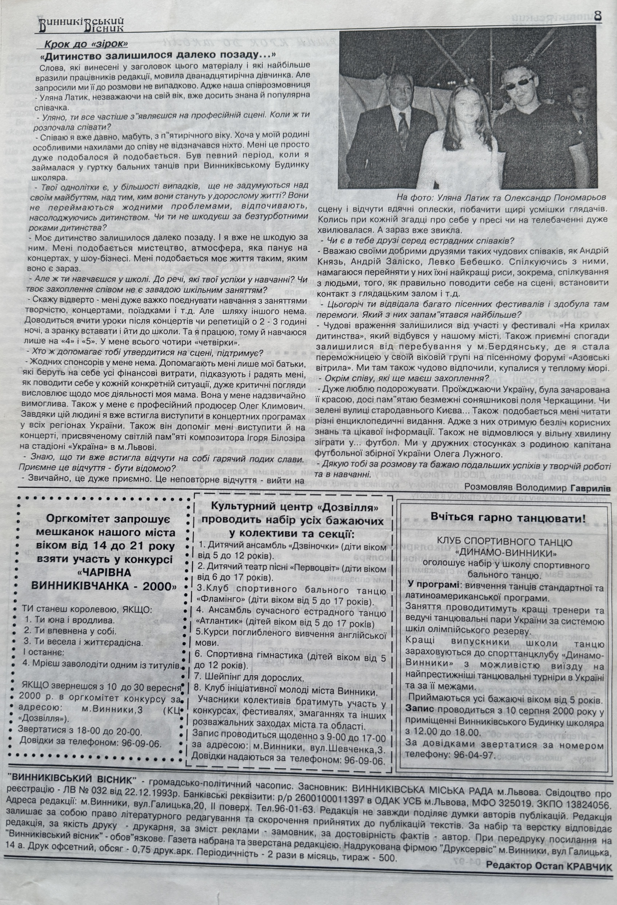

| Title | Vynnykivskyi Visnyk Interview |
| Original Article Title | Дитинство залишилося далеко позаду... |
| Material Type | Newspaper Interview |
| Featured Artist | Uliana Latyk |
| Publication | Vynnykivskyi Visnyk (Винниківський Вісник) |
| Issue | No. 17–18 (162–163) |
| Publication Date | 14 September 2000 |
| Page | 8 |
| Language | Ukrainian |
On 14 September 2000, the Ukrainian newspaper Vynnykivskyi Visnyk (Винниківський Вісник) published an interview with Uliana Latyk titled «Дитинство залишилося далеко позаду...» (“Childhood Has Been Left Far Behind…”).
The interview documents a stage in Uliana Latyk’s early artistic career, when she was performing as a young vocalist and taking part in musical events and vocal competitions in Ukraine.
The article discusses her childhood, first stage appearances, education, family support, musical achievements, and future ambitions. One of the accompanying photographs features Uliana Latyk together with Ukrainian singer Oleksandr Ponomariov.
This archival record identifies the publication by its newspaper title, issue number, publication date, and page reference. The original article is preserved in the archive through images of the newspaper and interview page.
| Archive Category | Press Publication |
| Name on Publication | Uliana Latyk |
| Current Stage Name | Ana Danch |
| Archive Reference | Newspaper Interview (2000) |
| Country | Ukraine |
| Author | Volodymyr Havryliv |
| Publication | Vynnykivskyi Visnyk (Винниківський Вісник) |
| Publication | Vynnykivskyi Visnyk (Винниківський Вісник) |
| Issue | No. 17–18 (162–163) |
| Date | 14 September 2000 |
| Page | 8 |
| Original Article Title | Дитинство залишилося далеко позаду... |
| Source Language | Ukrainian |

This newspaper interview is preserved as a historical press item documenting Uliana Latyk’s artistic activity before she adopted the stage name Ana Danch.
The article title, publication date, issue number, and page reference are recorded as archival metadata. The claims and details in this entry are limited to the information stated in the supplied record; the physical newspaper remains the primary source.